汽车广告 · 山路试驾 · 2026.09
云边慢行 · 极氪 8X
片中职务策划摄影师剪辑师
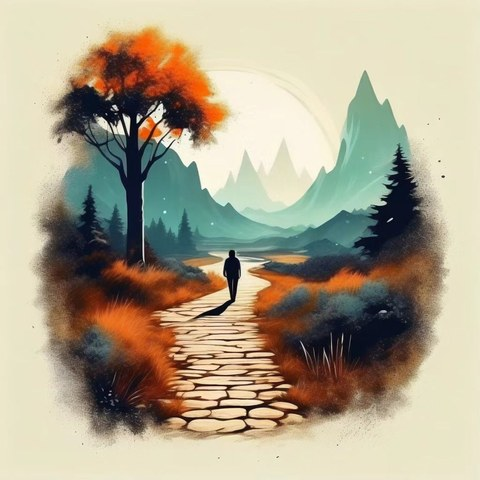
寻踪踏迹XUNZONG TAJI 联系合作求职方向是新媒体运营 / 内容运营。选题、拍摄、剪辑可以一个人交付全链路，有从 0 到 1 跑起一个账号的经历：300+条作品、总播放 130 万+。运营侧靠数据做判断，把跑得好的选题类型沉淀成下一轮方向。
这里的片子跨度比较大：汽车广告、AIGC、纪录片、专题片和校园项目。每张卡写了片子的来龙去脉，以及我在其中实际负责的那一部分。
极氪 8X 与 9X 的整车向内容：山路试驾、门店三条试驾路线、雨季涉水实测，等根据销售端需求定制的视频
把 AI 生成的画面接进实拍里的几支片子。AI 出画面、实拍补质感，拼在同一条时间线上。
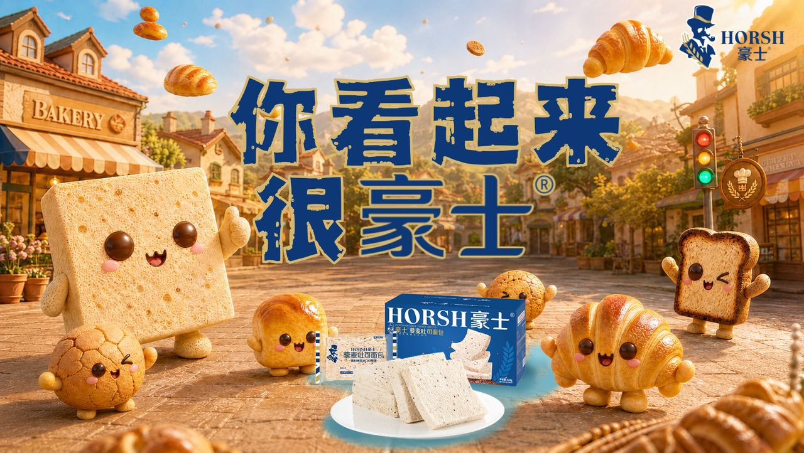
★ 代表作观看 ↗用 AIGC 卡通动画和丝滑转场包装实拍，讲述豪士面包的特点与魅力。
通过实拍加动画，着手于AD 钙奶的酸甜口感和 30 年记忆，讲述它怎么陪着一代代人长大的故事。
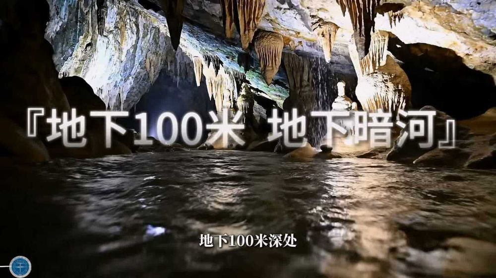
观看 ↗结合地大地学特色，用AIGC技术实现较难实拍的画面和讲解动画。
一期讲清一个概念。从手机像素到相机测光，都是平时真用得上的常识。
手机像素越做越高，画质为什么没跟上。
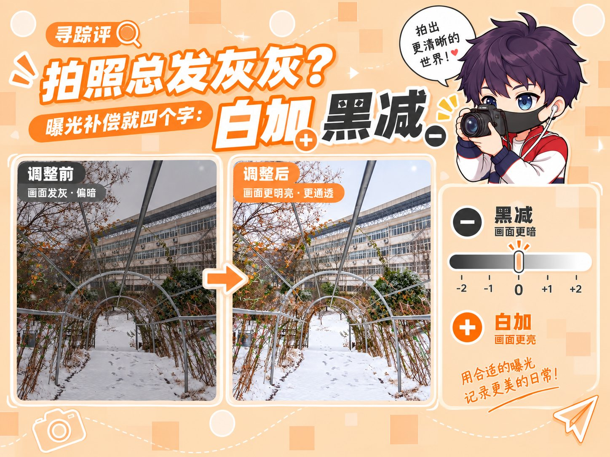
同一片雪，别人拍是奶油白，你拍是水泥灰。曝光补偿其实就四个字：白加黑减，拍完记得归零。
测光模式选错了，曝光补偿也救不回来。评价测光、中央重点测光、点测光，三种模式分别适合什么场景，一支讲清楚。
把 Canva 可画画成一只小精灵，跟着一个自媒体博主从大一到大四，用 AI 化解做封面、做动效这些难题。
以创意光影语言重新诠释药膏的功效，打破常规视角，用镜头语言让产品"说话"
以律动音乐驱动视觉叙事，通过多组质感镜头呈现汉口二厂汽水的多元风味，在节奏与画面的共振中传递品牌活力与产品个性。
30 秒校园创业场景：电脑崩了、创业计划没备份，云盘救场；答辩成功后，喜悦变成 AI 视频彩铃的旋律。
纪实长片，题材集中在长江生态保护和山区支教。以跟拍为主，从选题、采访到成片完整走一遍。
跟拍秭归清漂队七天。队长周功虎清漂二十年，每天清晨五点出航——二十年间 1.6 万次，清走 28 万立方米漂浮物。
200 公里山路，从城市到村庄。记录湖北黄石阳新县山田完全小学的夏天，和一群支教者碰到的未被书写的故事。
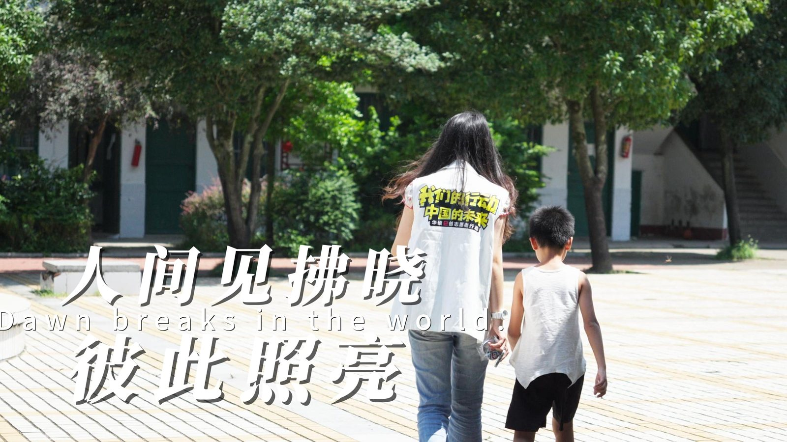
★ 代表作观看 ↗七月，一群青年走进桂北雄村小学。十五天里，没有空调的教室、暴雨中的上学路，和城乡教育的温差。
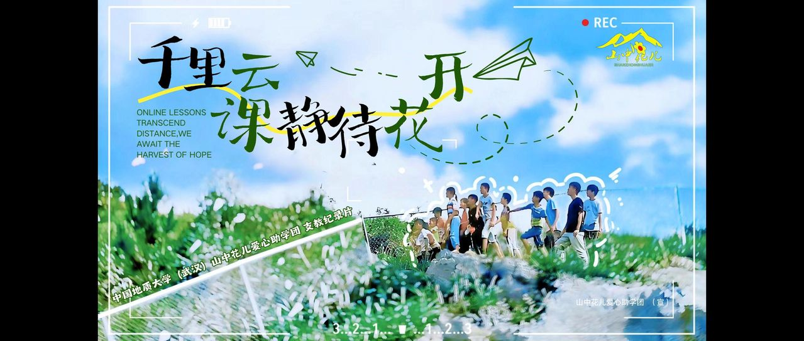
★ 代表作观看 ↗山中花儿爱心助学团做了 21 年远程支教，隔着屏幕给山区孩子上课，志愿者边教边学。
2024 年夏天，19 个年轻人坐绿皮火车转客运大巴，走了 20 个小时进山。
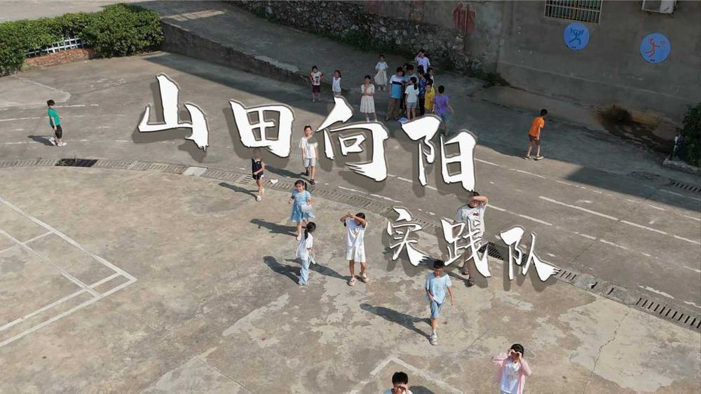
观看 ↗支教队人物访谈。
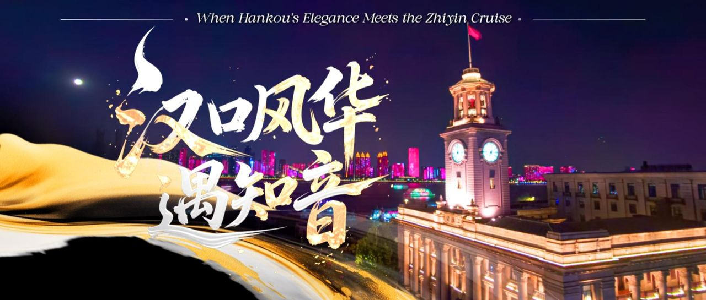
★ 代表作微信视频号 ↗以"知音号"游轮与汉口历史风貌区为双线叙事主轴，呈现江汉关大楼、同兴里等历史建筑的活态传承，融入伯牙子期知音文化意象，展现百年老城与当代生活的和谐共生。
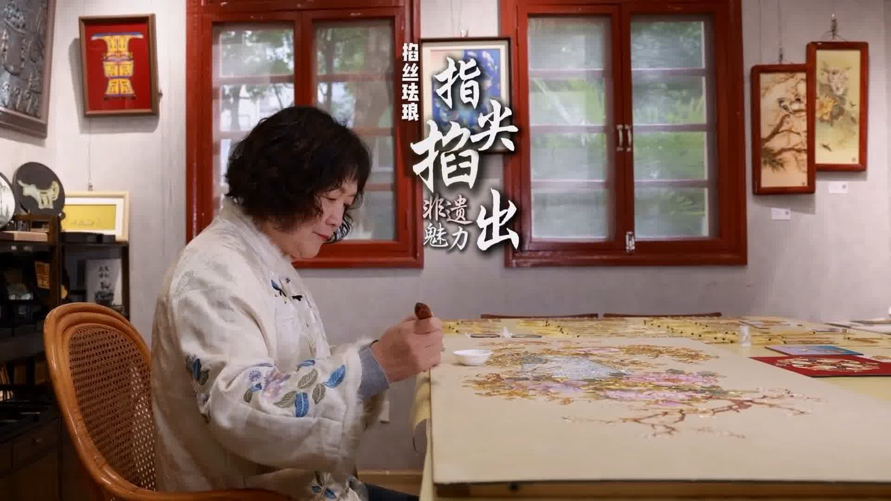
★ 代表作观看 ↗掐丝珐琅彩画传承人邓璧玲：从拜师学艺到创业，疫情三年不裁员搞研发，把这门八百年技艺做进了大运会「蓉宝」。
从北方小镇到江城武汉，隔着一千公里的距离，眼前的一切既新鲜又陌生。然而有一道银蓝色的影子，在十米高的空中悄然划过——那是中国首条开通运营的悬挂式空轨，光谷光子号。
两个女孩的两段故事：一个在校园樱花树下找回勇气，一个在职场夜晚的站台重拾骄傲。
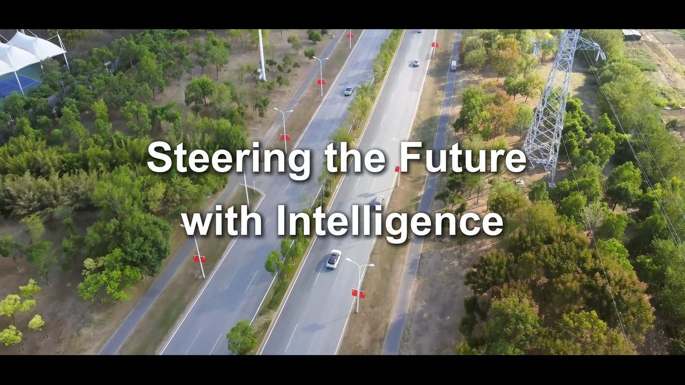
★ 代表作观看 ↗当无人驾驶出租车悄然穿梭于武汉街头，一场前所未有的出行革命已悄然到来。
校方委托的宣传片、人物专题，以及创新创业项目介绍片。
这是一部聚焦中国地质大学（武汉）国家奖学金获得者的人物群像专题视频。
师者如大地，育人如耕土。这是一部聚焦中国地质大学（武汉）国家奖学金获得者的人物群像专题视频。
中国国际大学生创新大赛省铜奖项目介绍视频
聚焦地大网红科普教授刘福江老师，深入的访谈了解其选择科普的初心
会泽县茚旺高级中学校园宣传片。
为「数智地大」校园 App 做的系列短视频。用校园场景讲产品功能：课表导航、校园一张图、网络安全。竖屏发布，一条讲一件事。
现频道置顶最新一期，其余按播放量从高到低排；早期频道按播放量排。播放量 100 以下的不收录。
一个人在做的数码评测频道。自己选题、自己拍、自己剪，主攻手机影像与高性价比数码产品的长期实测，也做摄影基础知识的科普。从 2017 年课余做的早期频道一路更新到今天，两个账号累计发布作品 51 条。
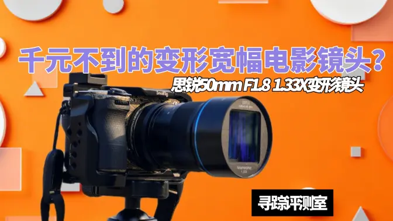
04:30仅需900元的电影变形镜头，2025年思锐50mmF1.8 X1.33变形镜头体验到底如何02:072 亿长焦还不够，华为又给手机外挂了一支镜头？04:052025年vivoX300pro到底可以带来什么样的影像体验？02:08三天三台旗舰，等等党天塌了？北京无人机新规出台？02:21别花千元买 CCD 了，45 块的老 iPhone 拍出来也很对味02:429月数码圈直接封神｜华为苹果小米大折叠正面刚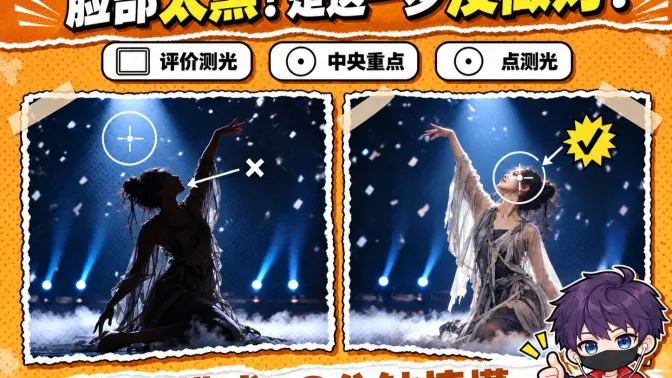
01:56逆光脸黑？3种测光模式怎么选？01:09小米玄戒O3发布！GPU性能暴涨85%却更省电？到底OK不OK？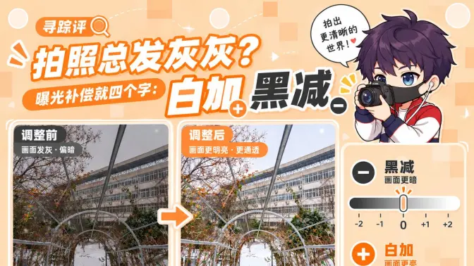
02:31曝光补偿到底是什么？该怎么用？拍照总发灰？该如何解决？02:41小米华为苹果巅峰对决？AGI时代要来了？ 上周数码圈有点意思~03:51两亿像素手机被两千万像素微单吊打？高像素为什么不等于高画质03:19佳能新机一发布，评论区全是索索索？9月惊喜还有些啥？📷学生时代做的旧号，从折腾二手硬件、老设备捡漏开始，是后来做数码评测的起点。
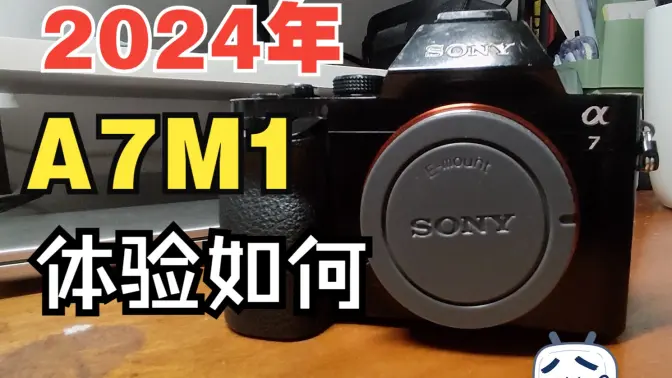
06:512000不到的初代A7在2024年能否再战？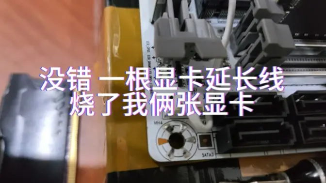
02:33一根显卡延长线烧了我俩张显卡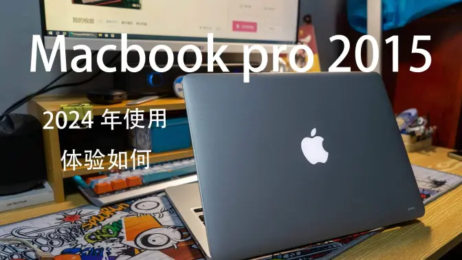
03:442024年一千五的Macbook pro 2015使用体验如何（mbp15/macos） 制作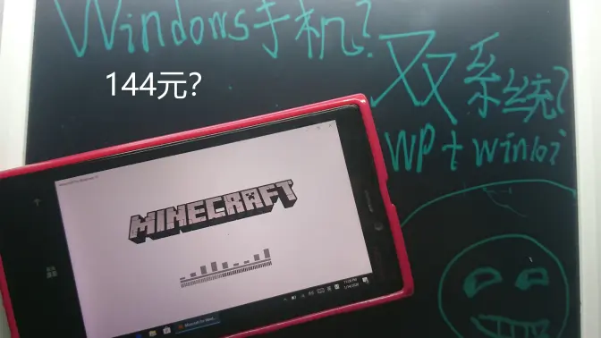
08:53144元的双系统手机？手机运行win10？ Lumia920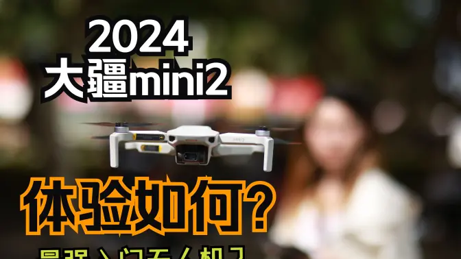
05:561400的大疆mini2无人机 现如今体验如何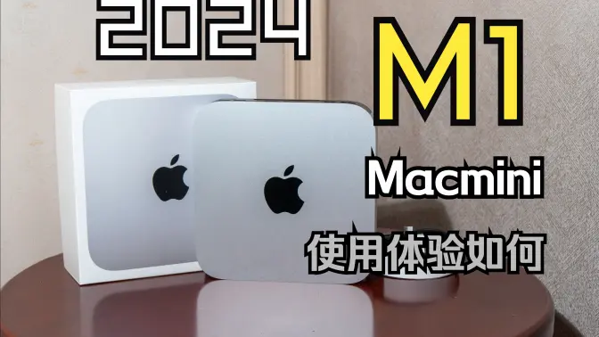
06:201999搭载M1的Macmini现如今体验如何/MuMu模拟器Pro在Macmini-M1测评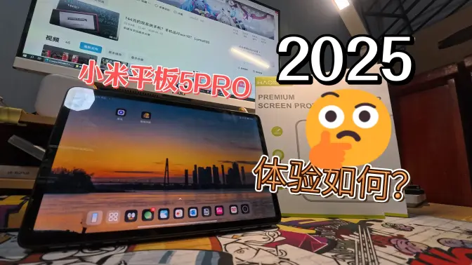
06:091200的小米平板5pro现如今体验如何？04:38假如你的内存翻了8倍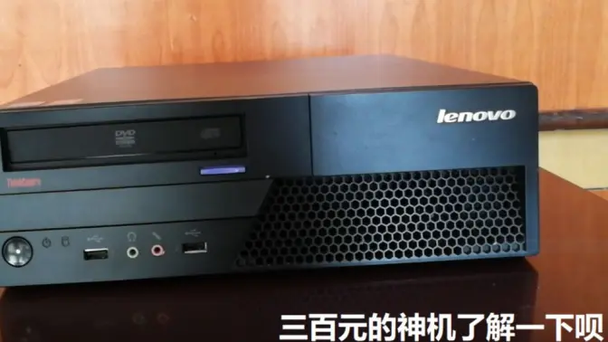
17:34开箱+评测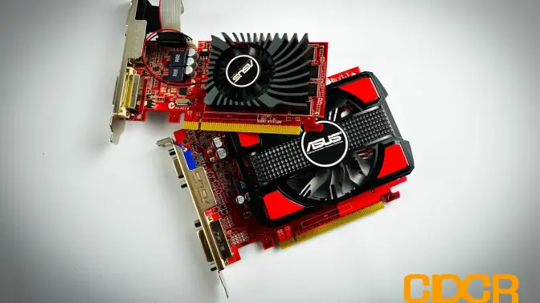
02:36当你将你的祖传集成显卡 换成AMD R7 24001:24如何Ai快速将代码转换成流程图？帮助你完成课程设计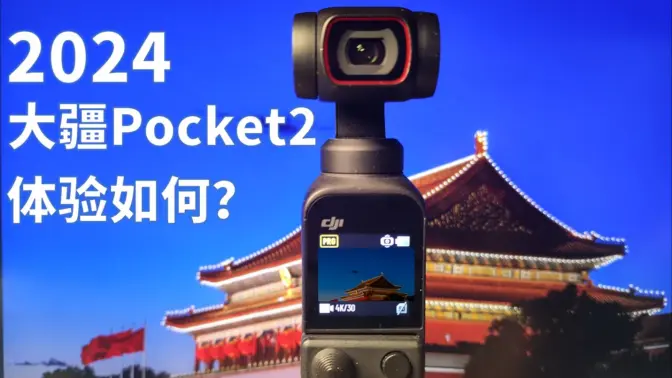
05:291400的大疆pocket2全能套现如今体验如何？13:04200元能玩MC的windows的寨板？ 寨板在今天还有什么样的体验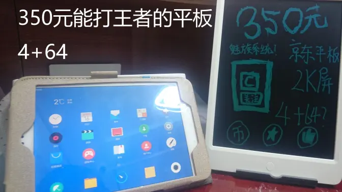
09:31350元能打王者的2K娱乐平板 JDtab简单评测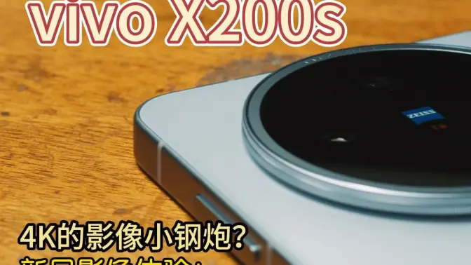
04:06计算摄影非常能打？ vivo X200S影像体验 到底如何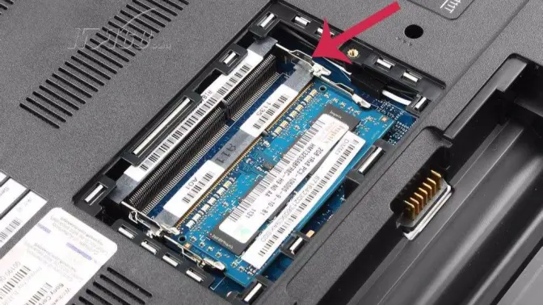
09:39笔记本安装内存条 Creepr_WEN搞机03:07适配M系列芯片的安卓模拟器?MuMu 模拟器pro使用体验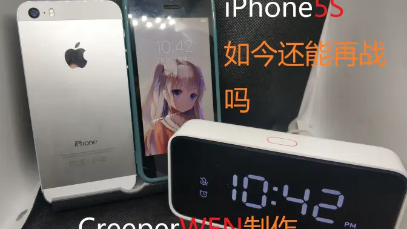
07:24150的iPhone5s如今还能再战吗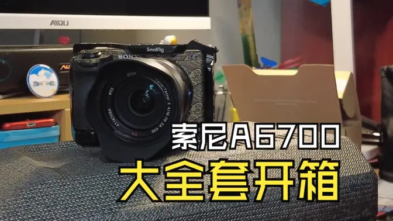
10:4113000收的索尼a6700大全套到底值不值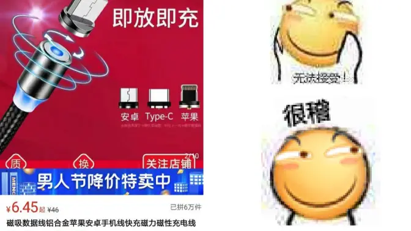
04:44拼夕夕9.9买的磁吸式充电线 充电效果怎么样呢？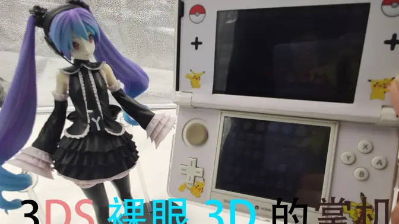
05:283DS——曾经的掌机王者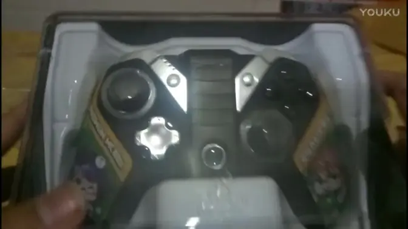
10:48小鸡手柄G4多玩我的世界版开箱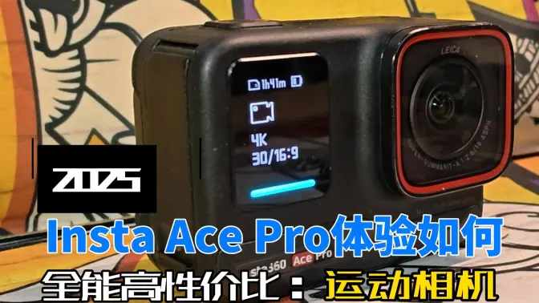
07:001700的Insta360AcePro运动相机现如今体验咋样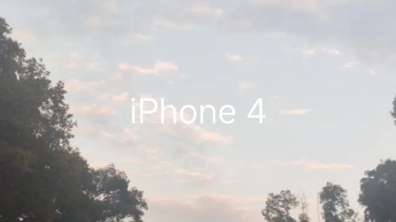
08:0060块钱的16GB的iphone?26:37嘿！教授刘福江喊你来唠嗑啦，超有趣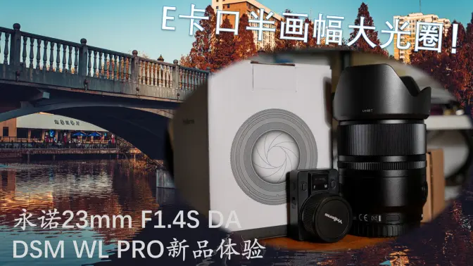
03:07国产高性价比半画幅人文扫街头来了！永诺索尼e卡口23mmF1.4新品体验！等效35mm大光圈人文扫街镜头！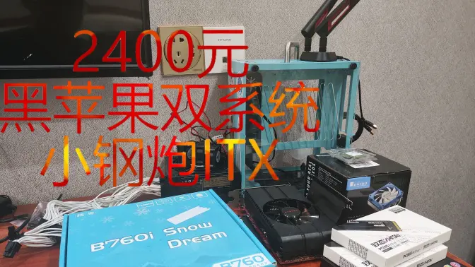
06:13仅需2400元的黑苹果双系统ITX主机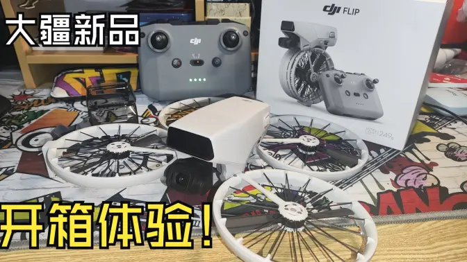
11:42大疆flip 可折叠航拍vlog无人机 开箱初体验!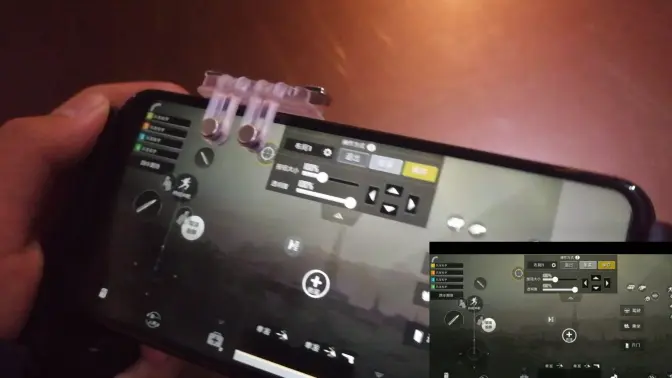
16:16吃鸡神器是否像JS说的那么神奇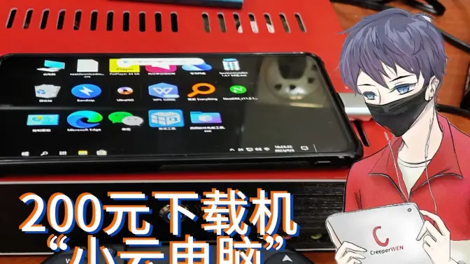
04:00仅需200元的完全远程控制的下载机使用体验如何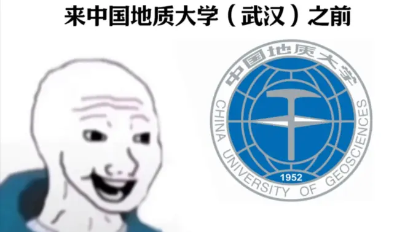
01:52来地大之前vs来地大之后00:40听说你也想来看看像素地大#1视觉中国签约摄影师 · 光厂签约创作人 · 米拍新秀摄影师 · NiSi 地标摄影师，无人机累计飞行 50 小时以上。拍摄从拍摄到后期可以一个人完成。
无人机视角下的城市街区、古建与山野。
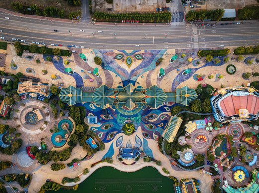
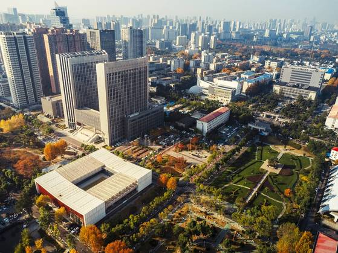
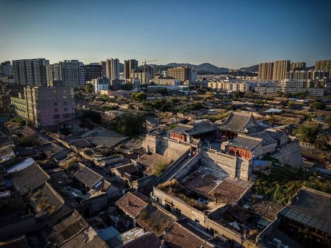
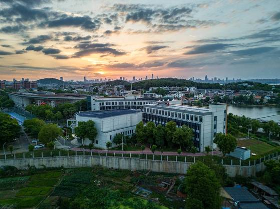
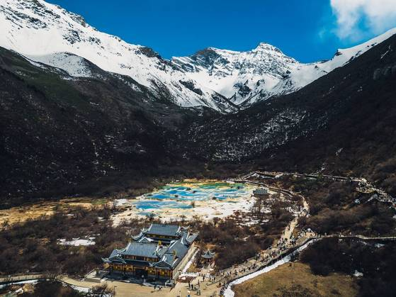
现场跟拍，不摆拍。湖上的日出、支教课堂里的孩子。
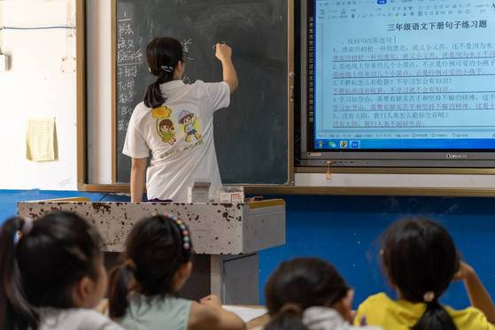
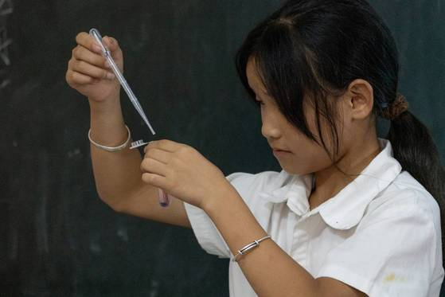
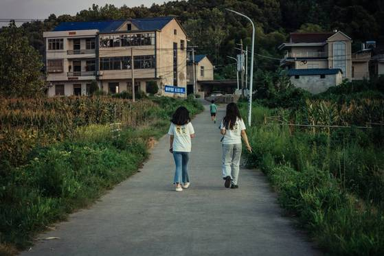
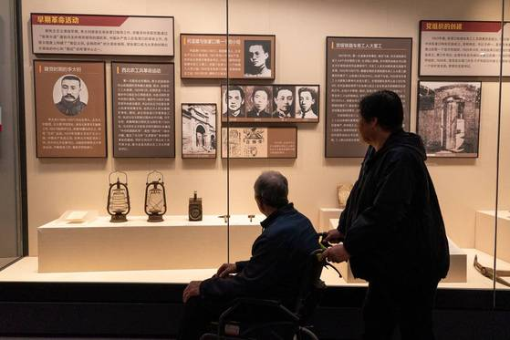
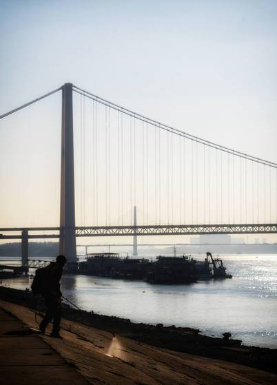
校园活动与城市夜间现场，人多光杂，靠抓拍。
星空、雪山与季节变化。
校园里的日常：操场上的列队、草地上躺着看书的午后。
住宅群、校园建筑与园林古塔，看结构和光。
自然光下的人物肖像，多为逆光与侧光。
布光练习与小品，从夜里的一盏灯到树梢上的白鹭。
七个项目分两段：前面三个把内容生产做成工具，后面四个是数据、算法与工程实践。每一条都写了技术栈和我实际动手做的部分——这些是我除了内容运营之外，能上手数据与工程的地方。
三个把重复劳动做成工具的项目。都先用脚本把流程固定下来，再让内容批量产出。
独立设计开发摄影作品集网站，成品为可离线分发的单文件。
独立完成一个摄影作品集网站，从视觉设计、前端开发到内容编译一手处理。图库支持分类筛选与点击放大；页面文案由脚本读表生成，改内容不必动代码。最终把全部图片内嵌为单个 HTML 文件，无需服务器，微信或邮件直接发送即可打开。
为 B 站栏目搭建白板动画自动成片流水线，分镜进、成片出。
为 B 站科普栏目《数码原来如此》独立搭建一条白板动画成片流水线：把分镜表和字幕喂进去，按叙事顺序自动落笔，直接渲染导出 MP4，全程无需人工逐帧。高像素、曝光补偿、测光三期科普均由这条线产出。同一套流程可跨期复用，重复出片。
把口播文案生产归纳成可复用规则，一套骨架支撑三类内容。
独立搭建一套口播文案生产体系：从 20 多篇已发布文案中归纳语体规则，再用规则出稿。《评到底》长评测按设备参数与真实体验撰写，《新机有点意思》数码速报按固定流程从选题到成稿，极氪 30 秒口播沿用同一套骨架。速报素材按稿自动归集，采完即自动对应到段落。
课程里从零实现的那部分：数据分析、文本分类、图像处理，以及一个完整的桌面应用。
用 400 条视频的互动数据，倒推「什么样的标题真的火」。
独立完成 B 站科普区 400 条视频的数据采集与分析：把「5.2 万」这类中文数值解析成数字完成清洗，分词过滤后对六项互动指标取对数平滑再加权构造热度分（硬币 15、分享 12、收藏 10、点赞 8、弹幕 6、播放 0.3），把权重回填到标题词上得到加权词频；再用 LDA 主题建模（K=5）和自定义情感词表做标注，最后用传播学框架解释结果。
不依赖现成库，用 NumPy 从零实现三种文本分类算法。
基于 CNews 中文新闻数据集（10 类、5 万条训练样本），不依赖现成分类库、用 NumPy 从零实现三种经典分类算法，再用 Weka 平台跑同一组实验做对照验证。重点是把算法原理落到代码，并用对照实验交叉验证结果。
Python 实现空间域增强、频率域滤波、图像复原等四个模块。
独立完成图像处理与分析课程设计，用 Python 实现四个模块：空间域增强、频率域滤波、模糊图像复原、彩色图像处理。每个模块都输出处理前后对比图，用来验证算法效果。
独立开发 C++ / Qt + SQLite 桌面应用，从设计一路做到打包。
独立完成一个完整桌面应用工程：C++ / Qt 开发，登录验证、主窗口、数据编辑三层结构，SQLite 存储图书与借阅数据，支持增删改查。从类图设计到打包成可运行 exe，全流程独立完成。
求职方向：新媒体运营 / 内容运营。内容生产在一线，判断靠数据。
求职方向是新媒体运营 / 内容运营。内容生产上，选题、拍摄、剪辑可以一个人走完，从策划文案到成片交付不用等排期；账号运营上，习惯每周汇总账号与直播数据做点检，把跑得好的选题类型沉淀成下一轮内容方向。日常还借助 Agent 完成资料整理与流程自动化，把重复的活交给工具，人专注在判断上。
比起课堂学习，我更倾向于实践出真知。无论是学生工作还是实习工作，我都努力把一条成片从创意到交付的全流程实现得更好。